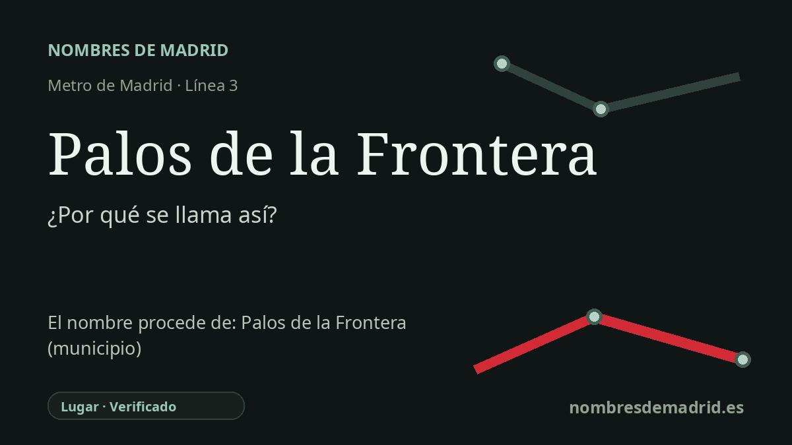

Publicado el · Investigación de Nombres de Madrid · Cómo verificamos cada origen · 8 fuentes consultadas
Respuesta rápida
La estación Palos de la Frontera toma su nombre de la localidad onubense cuyo antiguo puerto fluvial fue el punto de partida del primer viaje de Colón el 3 de agosto de 1492. Abrió como Palos de Moguer en 1949 y pasó a llamarse Palos de la Frontera el 30 de mayo de 1986 para corregir un topónimo erróneo de larga duración.
La historia del nombre
El origen directo del nombre de la estación es un lugar: Palos de la Frontera, municipio de la provincia de Huelva, en Andalucía. La parada de Metro se sitúa bajo la calle de Palos de la Frontera, en Arganzuela, de modo que su nombre de transporte procede tanto del callejero madrileño como de la localidad histórica a la que ese callejero alude.
Palos de la Frontera es conocida sobre todo por su antiguo puerto fluvial, situado en un estero del río Tinto. Desde aquel Puerto de Palos, el 3 de agosto de 1492, zarparon Cristóbal Colón, los hermanos Pinzón y las tripulaciones de la Santa María, la Pinta y la Niña. Las fuentes locales y regionales lo identifican como uno de los lugares colombinos clave en la preparación y salida del primer viaje atlántico.
El nombre contiene además una corrección toponímica. La localidad onubense se llamó históricamente Palos, y su concejo adoptó la denominación completa Palos de la Frontera el 25 de mayo de 1642. Madrid, sin embargo, trazó a finales del siglo XIX una calle llamada Palos de Moguer, usando una denominación que la documentación oficial madrileña actual describe como un topónimo erróneo e inexistente nacido de la confusión de los primeros cronistas entre Palos y la vecina Moguer.
Metro heredó ese nombre de calle cuando inauguró la estación de la línea 3 el 26 de marzo de 1949, dentro de la prolongación Embajadores-Delicias. Durante décadas la estación fue, por tanto, Palos de Moguer, igual que el antiguo rótulo viario y no como el nombre oficial de la localidad onubense. El Ayuntamiento de Madrid corrigió el nombre de la calle en 1979, y un convenio de 1986 entre Metro y el Ayuntamiento de Palos de la Frontera abrió paso al cambio de nombre de la estación.
La fecha mejor documentada para el cambio de Metro es el 30 de mayo de 1986: El País informó el 29 de mayo de que la estación adoptaría la nueva denominación al día siguiente. El barrio administrativo madrileño tardó aún más que la calle y la estación, pues siguió llamándose oficialmente Palos de Moguer hasta que una modificación normativa municipal de 2022 lo convirtió en Palos de la Frontera. El nombre de la estación es, por ello, un ejemplo breve pero claro de cómo un plano de transporte puede conservar y después corregir un error histórico de denominación.